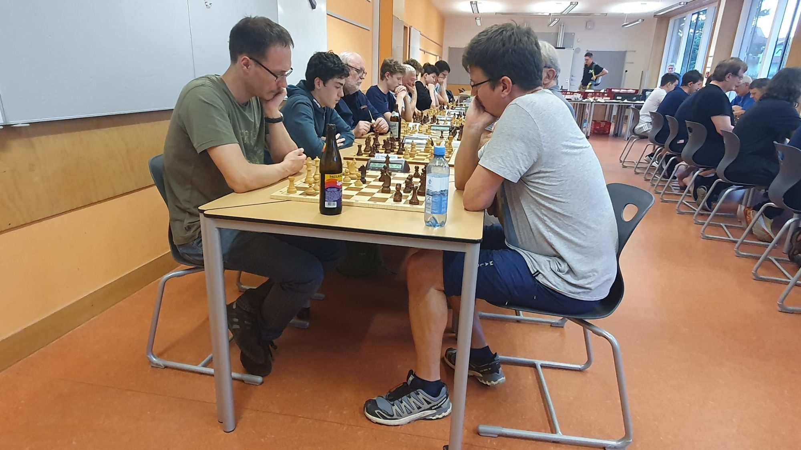
Play chess in Aschheim, Feldkirchen & Kirchheim
Every Friday at Gymnasium Kirchheim – youth 6 to 7:30 pm, adults from 7:30 pm. Beginners and guests welcome.
New here? How to visit us →Reports
All reports → Schnellschach-Vereinsmeisterschaft 2026
Schnellschach-Vereinsmeisterschaft 2026
 Kooperationsturnier GyKi feat. SG AFK 2026
Herbstblitz 2026Das Herbstblitz war mit 25 Teilnehmern gut besucht! Wir spielten (leicht) wahnsinnige 13 Runden Blitz bei 3 min Bedenkzeit. Read report →
Kooperationsturnier GyKi feat. SG AFK 2026
Herbstblitz 2026Das Herbstblitz war mit 25 Teilnehmern gut besucht! Wir spielten (leicht) wahnsinnige 13 Runden Blitz bei 3 min Bedenkzeit. Read report →
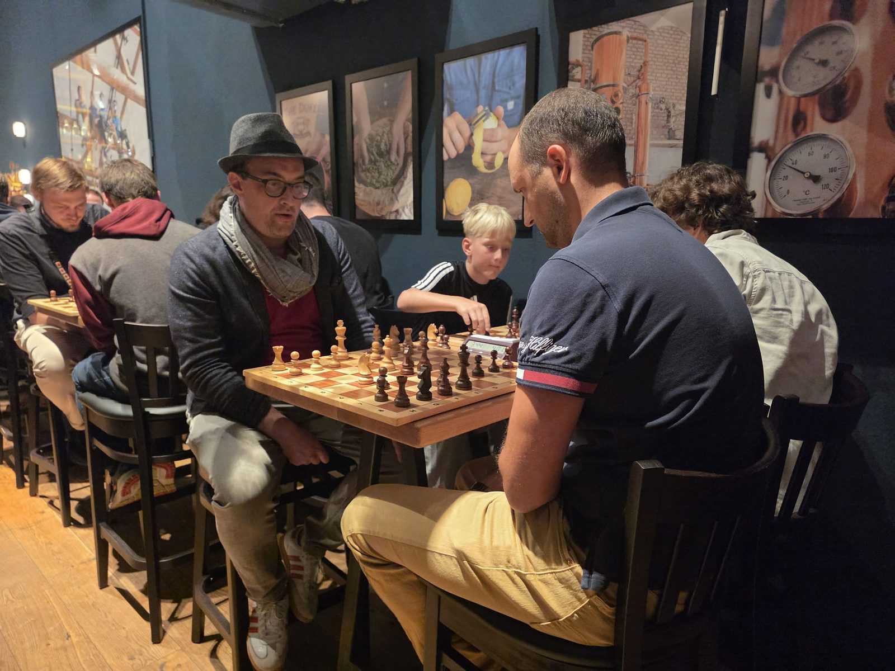
Duke Blitz - Runde 2 OIS 2026 - Dominik gewinnt C-Turnier!
Blitzjahreswertung 2026 (Zwischenstand)Nach drei von fünf Turnieren ist Vorjahressieger Fabian Müller mit zwei Punkten in Führung vor Pierre Tassell. Read report →
OIS 2026 - Dominik gewinnt C-Turnier!
Blitzjahreswertung 2026 (Zwischenstand)Nach drei von fünf Turnieren ist Vorjahressieger Fabian Müller mit zwei Punkten in Führung vor Pierre Tassell. Read report →
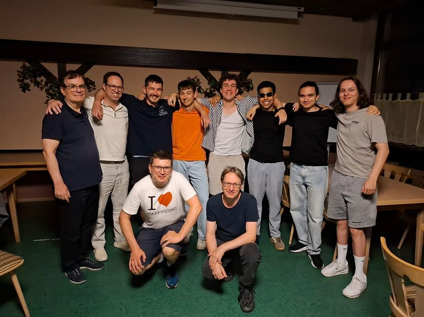
Oberlandquartett 2026: 5. Sieg in Folge! Saison 25/26 erfolgreich beendet!Bezirksliga Read report → U20-Landesliga Süd: Klassenerhalt geschafft!Am Samstag haben Alex Wittko, Gaurav Mudan, Konrad Keblat und Alex Meißner den Klassenerhalt gesichert und sich den 5. Platz von 8 in der U20-Landesliga Süd erkämpft! Read report →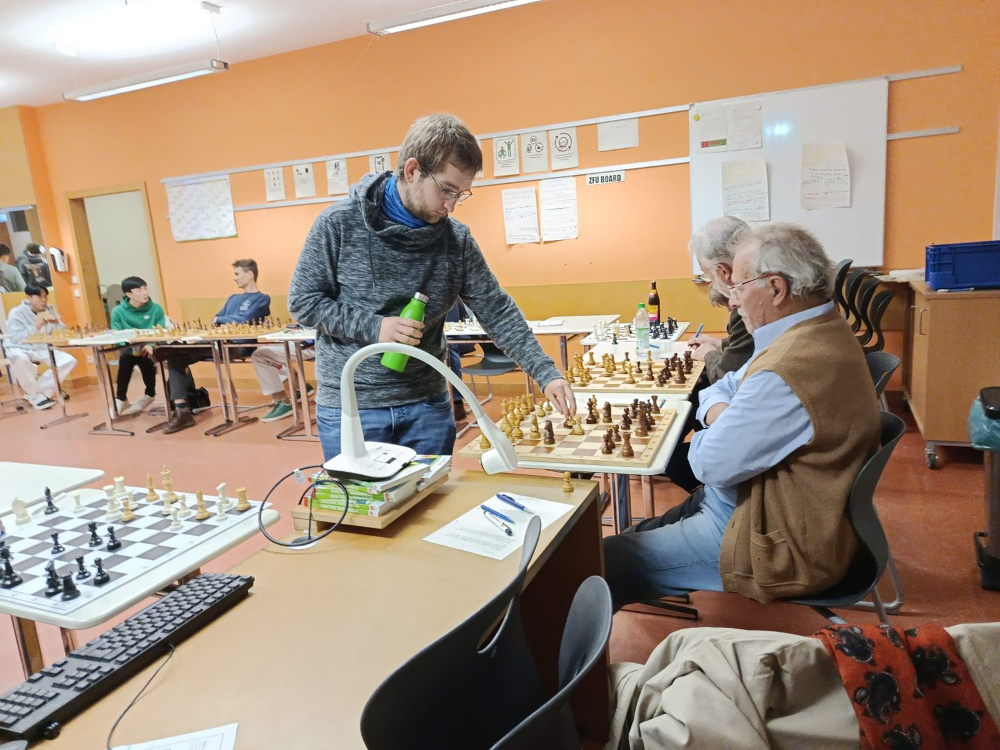
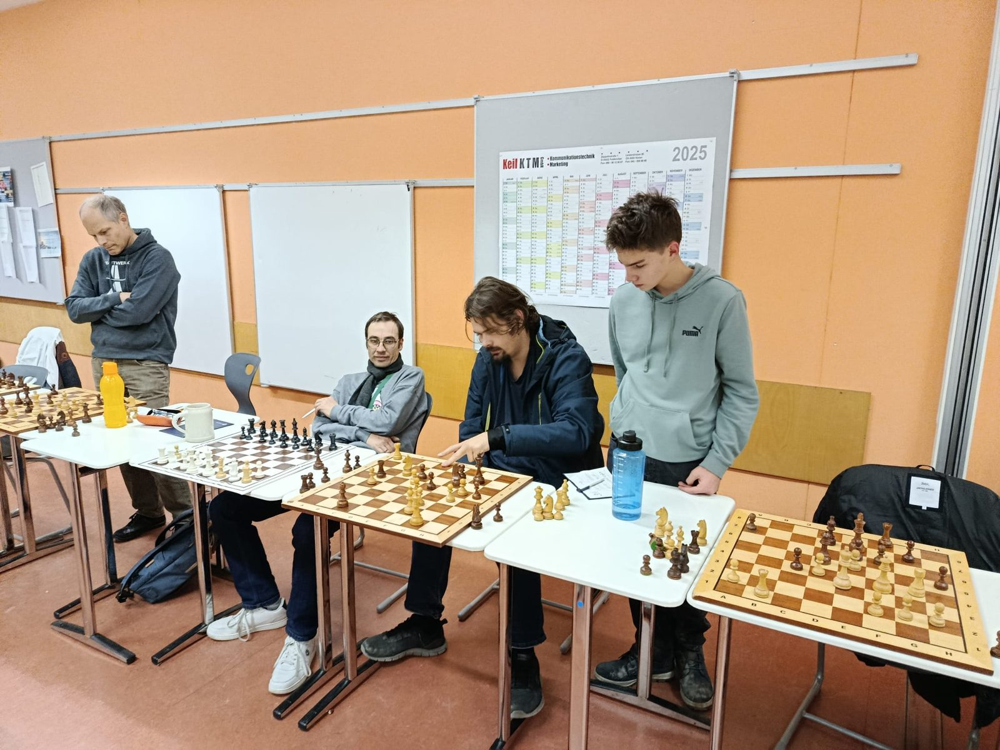


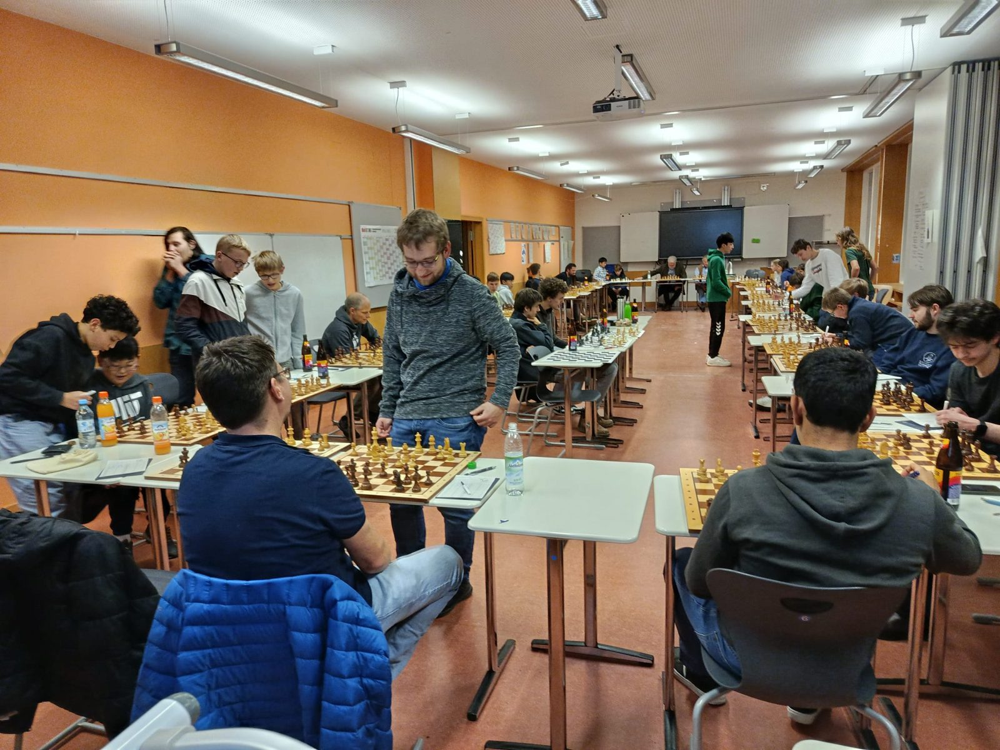
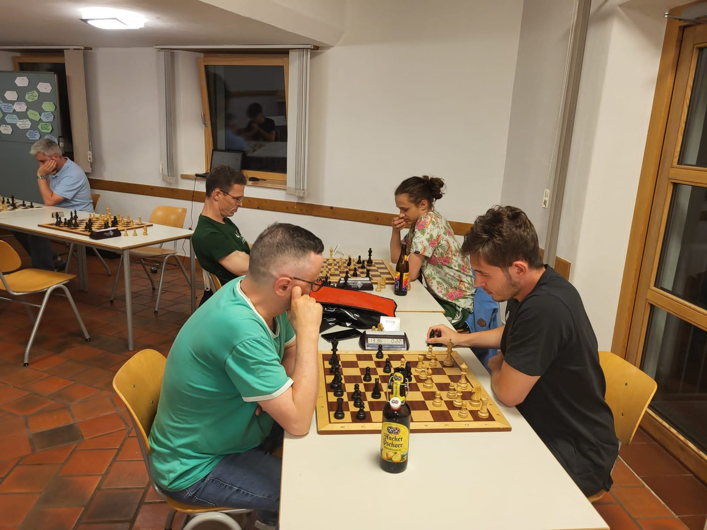

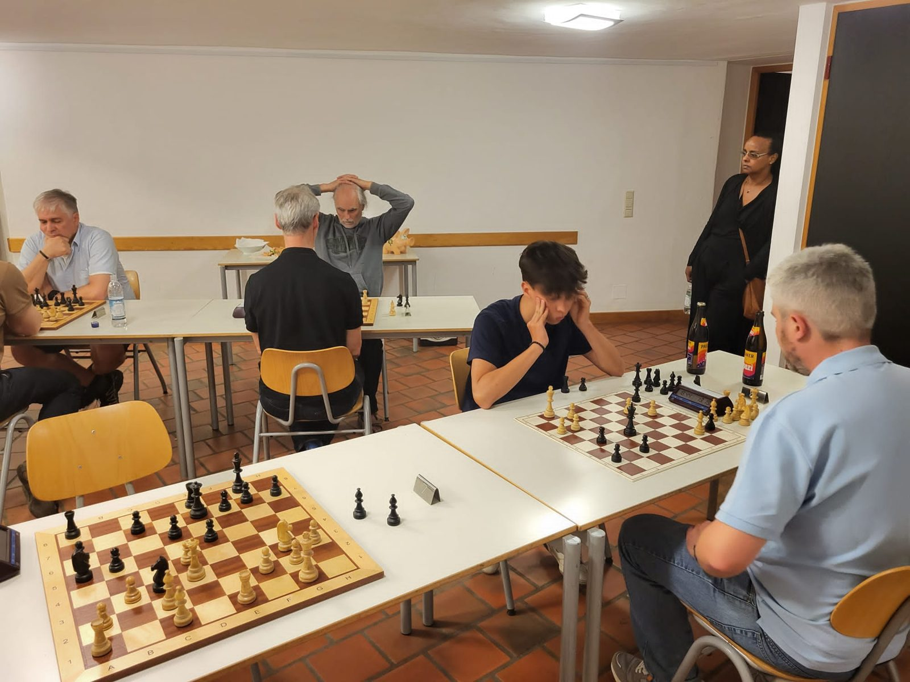
Teams · current round
5 wins – 4 matches still to play
| AFK 1 | at SC Sendling 1 | R3 | 5 : 3 |
| AFK 2 | vs. SC Roter Turm München 2 | R3 | 6,5 : 1,5 |
| AFK 3 | vs. Schachfreunde München 3 | R3 | Fri 27.11. 19:30 |
| AFK 4 | at SK Tarrasch 1945 München 5 | R3 | Fri 27.11. 19:30 |
| AFK 5 | at MSA Zugzwang 82 5 | R3 | Fri 27.11. 19:30 |
| AFK 6 | vs. Schachfreunde München 5 | R2 | Fri 27.11. 19:30 |
| Senioren | at Schachfreunde München 1 | R1 | 2,5 : 1,5 |
| U20 I | vs. FC Bayern München | R1 | 3 : 1 |
| U20 II | vs. SV Höhenkirchen 1 | R1 | 2,5 : 1,5 |

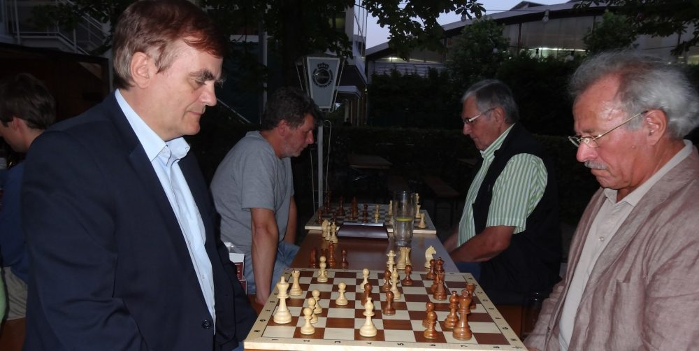
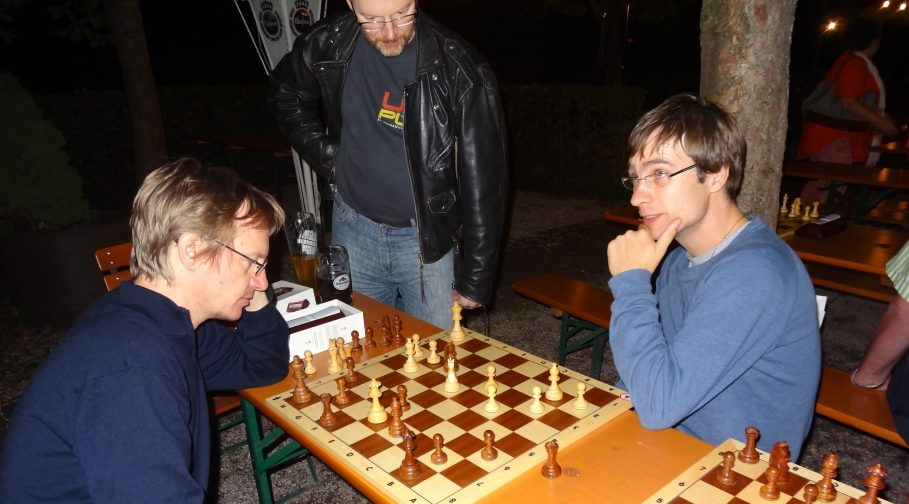


History
At the board since 1952
What started as Schachfreunde Feldkirchen in 1952 has become a chess club for three municipalities – with teams from youth level up to the Bezirksliga. Chronicle, milestones and which team played in which league and when.
1952founded
9teams today
104members
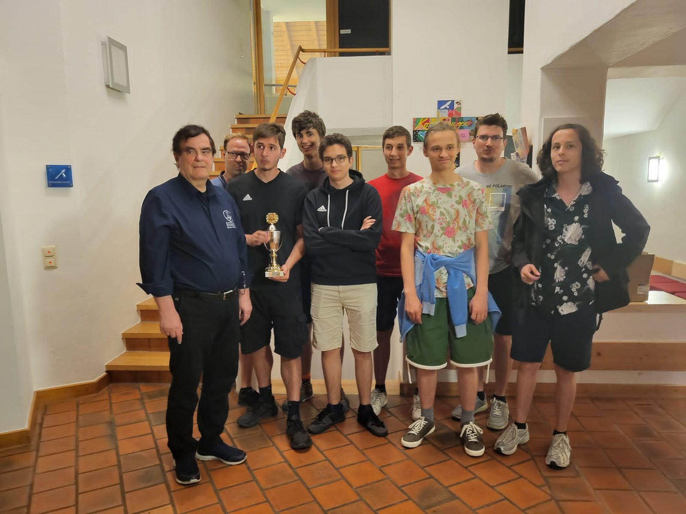
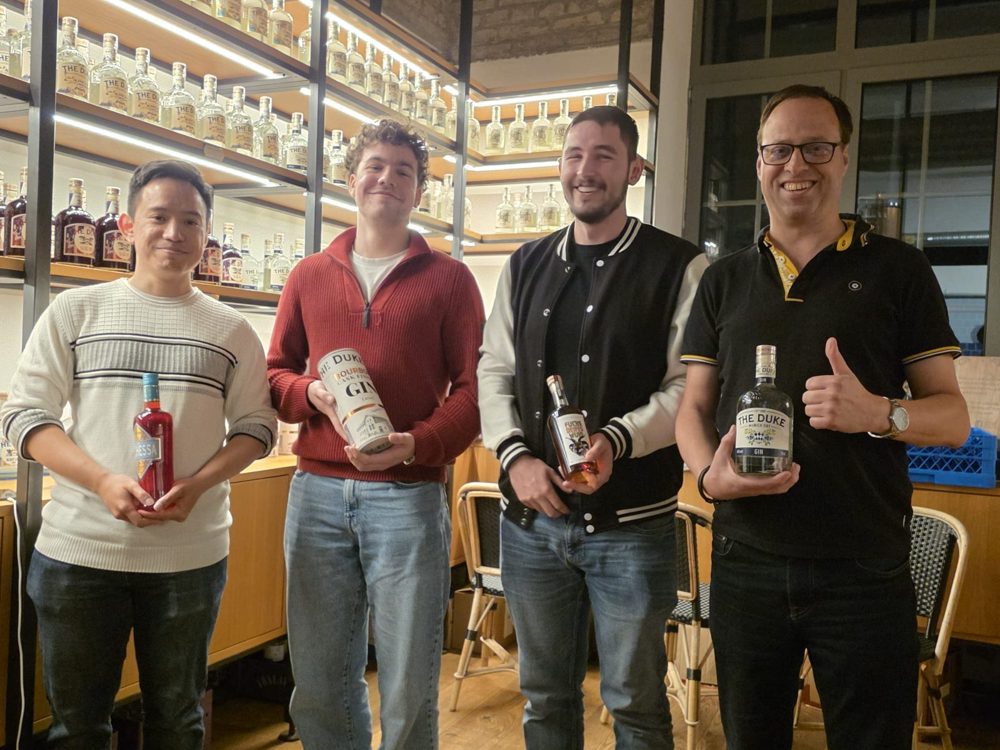
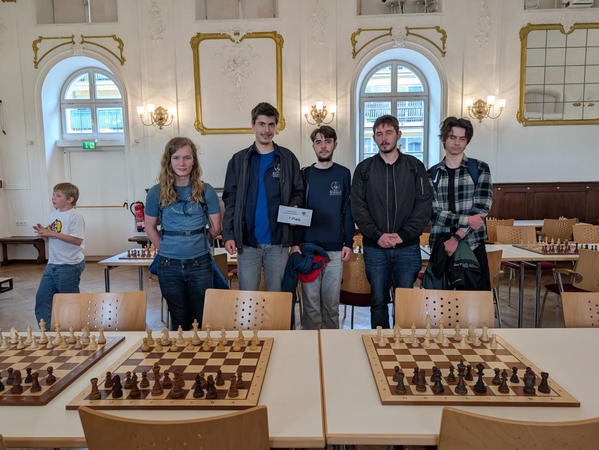


About us · New here?
Just drop by
Just drop by on a Friday – no need to sign up, and trying it out is free. Beginner, casual player or tournament player, young or old: everyone finds an opponent here.
- When? Every Friday from 6 pm – youth until 7:30 pm, adults from 7:30 pm
- Where? Gymnasium Kirchheim, Heimstettner Str. 20, 85551 Kirchheim
About us & new here → Membership form (PDF)